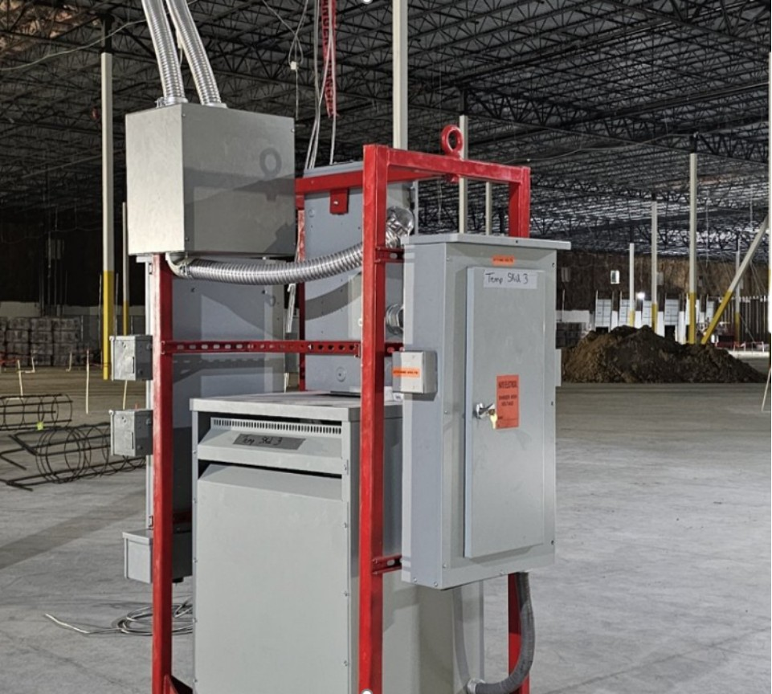
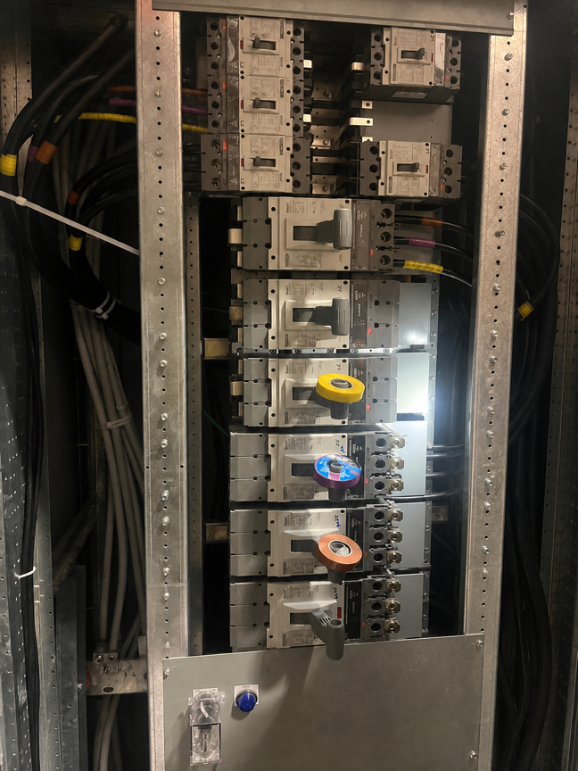
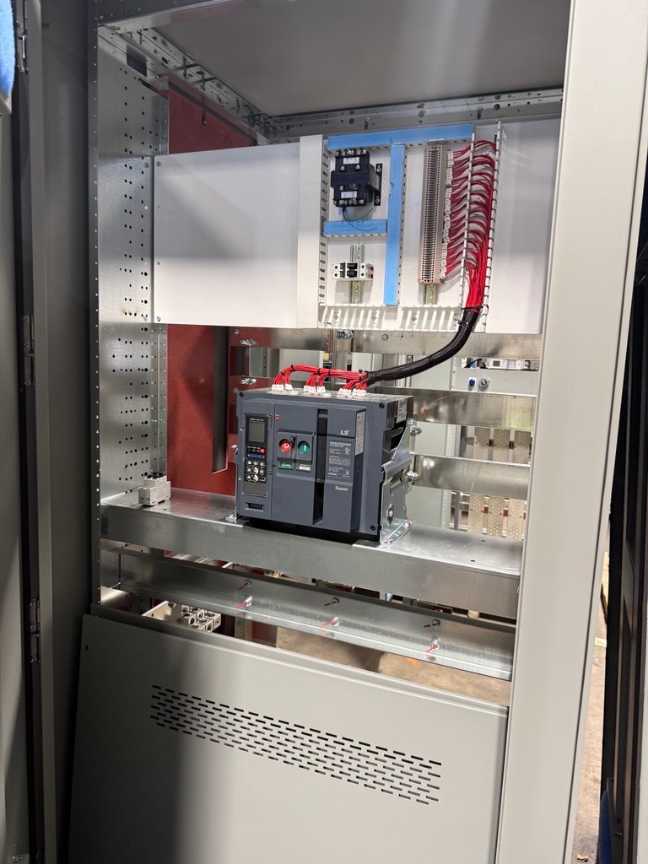
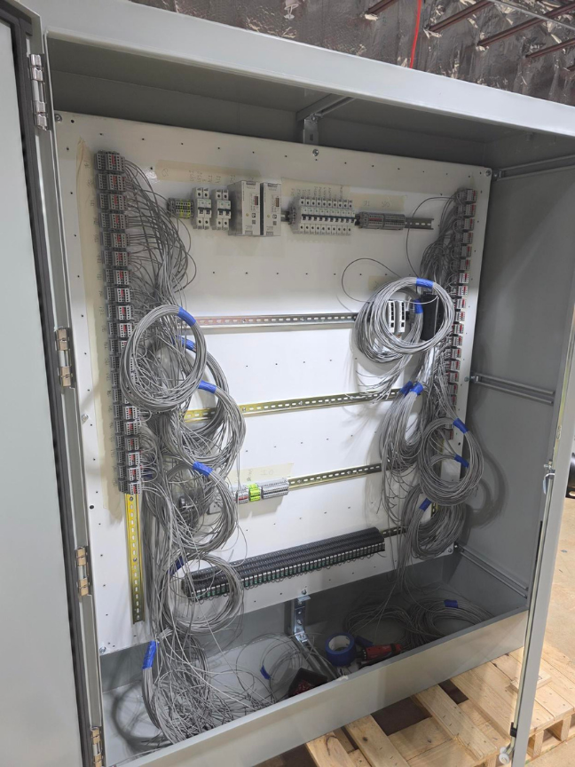
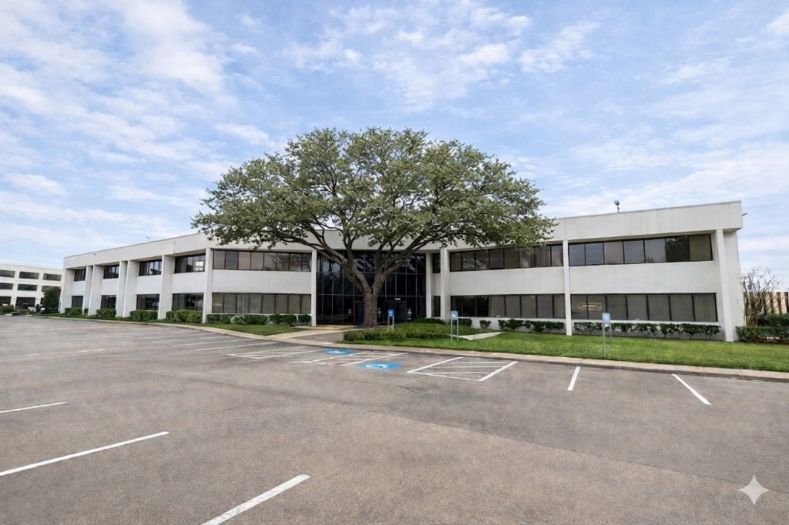

Temporary Power Skids
Centralized skid-mounted distribution configured for efficient installation, connection, relocation, and deployment.

Temporary Power Solutions
From low-voltage distribution to medium-voltage temporary power, 5K Power builds coordinated solutions that help keep work energized and schedules moving.
The temporary power ecosystem
Temporary power is a system.
It begins with the source, moves through distribution, and ultimately has to deliver safe, reliable power where work is actually happening.
5K Power brings those pieces together into a coordinated temporary power ecosystem built around site requirements, project phases, and real-world deployment.

Field-ready systems
A coordinated temporary power strategy can adapt as site conditions and project phases change.
Centralized skid-mounted distribution configured for efficient installation, connection, relocation, and deployment.

Flexible charging and electrical access that brings power closer to active work areas.

Portable power distribution at the point of use for changing field conditions and active construction.

Project-specific temporary power
No two sites operate exactly the same. We can develop custom temporary power assemblies around:
One coordinated power strategy
5K Power can support temporary power requirements through equipment manufacturing, system assembly, testing coordination, logistics, and deployment.
By looking at temporary power as a complete ecosystem, teams can reduce fragmented equipment decisions and create a more organized approach to distribution across the project.
Keep the project moving
Tell us about your project, power requirements, and schedule.